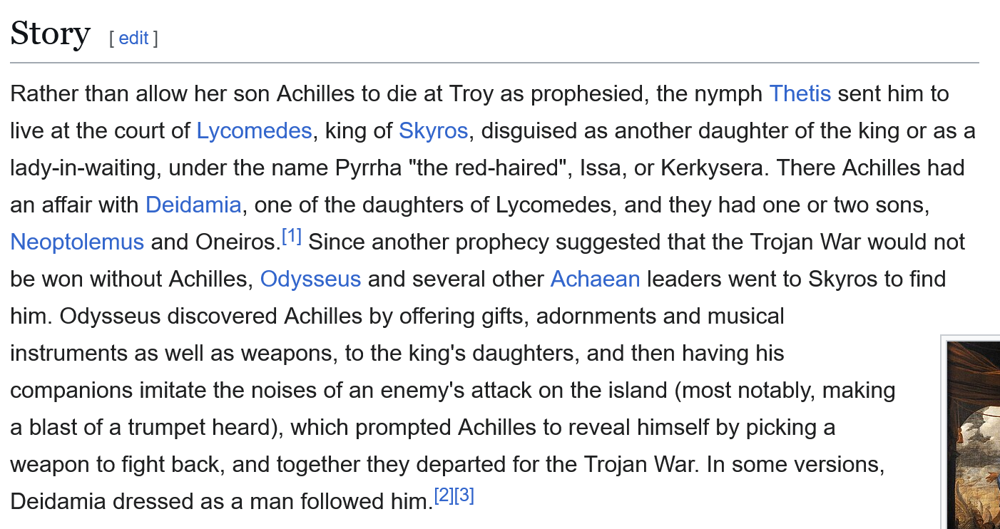

Eoin Reardon
Stephen Fry on Oscar Wilde
Brian Friel
Brian Friel was an Irish playwright. Some classics include 'Philadelphia, Here I Come', 'Faith Healer', 'Dancing at Lughnasa', and 'Translations'. They usually put one of his plays on in a big theater in Dublin once every two years or so - I once saw 'Faith Healer' with Aidan Gillen in the title role - but they're well worth reading if you come across any copies.
Mainie Jellet and Evie Hone
Blindboy Boatclub
Rebecca West
Rebecca West was an English journalist and writer. I mentioned her because she wrote about the Balkans in her epic piece of travel writing 'Black Lamb and Grey Falcon'.
Adam Curtis
Odysseus and Achilles (and Diomedes and Patroclus) at Skyros
It turns out I got the story a little wrong:

Opposite is the fresco from Pompeii which I think I mentioned.
I couldn't find an image of the cup I liked online, but you'll see it if you ever go to the Neueus Museum.
List items previously discussed
The humours of whiskey
While a child in me cradle, my nurse with her ladle
Was fillin' my mouth with an ocean of pap
When a drop from her bottle fell into my throttle
I stumbled and capered clean out of her lap
On the floor I lay crawlin' and screamin' and bawlin'
Till me mother and father were called to the fore
All sobbin' and sighin', they feared I was dyin'
But soon found I only was cryin' for more